不怕大众带字母，就怕丰田带凤凰。大众带字母一般是指大众旗下大众辉昂和大众辉腾，丰田带凤凰则是指丰田世纪(CENTURY)，它是一款为了纪念丰田汽车始创人丰田佐吉诞辰100周年而研制的豪华车，始创于1967年，也是丰田旗下最顶级的产品，有“日本劳斯莱斯”之称。
一、世界汽车品牌
- 吉利汽车集团(Geely Auto)隶属于浙江吉利控股集团，总部位于中国浙江杭州，在浙江台州/宁波、湖南湘潭、四川成都、陕西宝鸡、山西晋中等地建有汽车整车和动力总成制造基地，并在白俄罗斯等国家和地区建有海外工厂。吉利汽车集团旗下现拥有吉利汽车品牌、领克品牌和几何品牌，还有收购的沃尔沃、宝腾、路特斯等品牌。2018年吉利还收购了戴姆勒公司股份，成为了戴姆勒公司最大股东(戴姆勒控股了奔驰、迈巴赫、AMG、EQ等高端汽车品牌)。
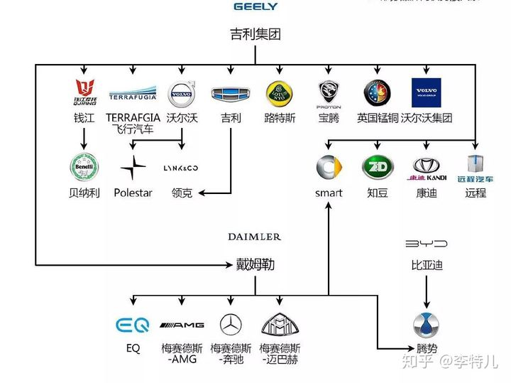
- 戴姆勒股份公司(Daimler AG)，总部位于德国斯图加特，是全球最大的商用车制造商，全球第一大豪华车生产商、第二大卡车生产商。公司旗下包括梅赛德斯-奔驰汽车、梅赛德斯-奔驰轻型商用车、戴姆勒载重车和戴姆勒金融服务等四大业务单元，戴姆勒控股了奔驰、迈巴赫、AMG、EQ等高端汽车品牌。
2019年3月28日，浙江吉利控股集团和戴姆勒股份公司宣布，双方将成立合资公司，在全球范围内联合运营和推动smart品牌转型，致力于将smart打造成为全球领先的高端电动智能汽车品牌。合资公司总部设在中国，双方各持股50%。
- 丰田汽车公司(Toyota Motor Corporation)，创建于1933年，创始人为丰田喜一郎(1894-1952)，总部位于日本爱知县丰田市和东京都文京区，是一家同时在东京证交所(TYO)、名古屋证交所(NAG)、纽约证交所(NYSE)和伦敦证交所(LSE)上市的日本跨国汽车制造商，也是目前全球销量冠军汽车厂商。传承着日本车的优良传统，实用主义明显，给消费者的感觉就是省油、适合家用(该说不说，小
***有时候制造的东西挺好用的)，主要产品有大发、雷克萨斯、丰田、斯巴鲁等。
国内合资品牌有一汽丰田、广汽丰田两大阵营。
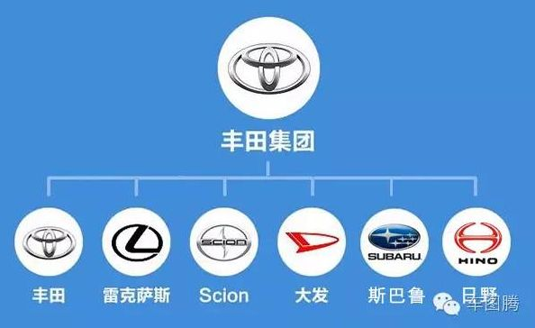
- 本田汽车(Honda Motor)，创建于1948年9月，创始人本田宗一郎(1906-1991)，总部位于日本国东京都港区南青山2-1-1。本田全称“本田技研工业株式会社”，是一家同时在东京证交所(TYO)和纽约证交所(NYSE)上市的跨国机动车制造商。本田主要闻名于其汽车、摩托车、引擎、飞机及电力设备生产业务。
国内合资品牌有本田中国、东风本田、广汽本田。
- 塔塔汽车公司(TataMotors)，是印度最大的综合性汽车公司、商用车生产商。塔塔集团成立于1868年，塔塔汽车是印度塔塔集团下属的子公司，成立于1945年，全球商用汽车制造商中排名十甲之内，年营业额高达20亿美元。捷豹与路虎分别于1922年和1948年诞生于英国，中间还被福特和宝马收购，在2008年捷豹和路虎被塔塔收购，成立捷豹路虎品牌。
在国内捷豹路虎和中国品牌奇瑞进行了合资，并对极光等一些车型进行了国产化。
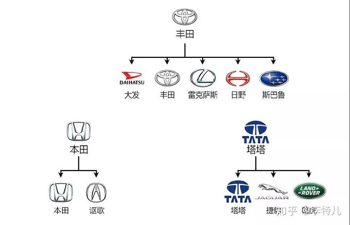
- 雷诺-日产-三菱联盟：雷诺是法国公司，日产是日本公司，三菱是日本公司。该联盟主要品牌有Nissan、英菲尼迪、三菱、雷诺、达西亚等
国内合资品牌有东风日产。
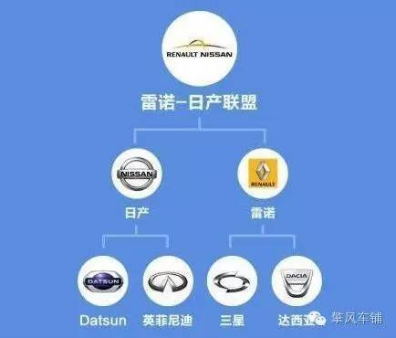
- 大众集团(Volkswagen Group)，是世界最大的三家汽车制造商之一，总部位于德国沃尔夫斯堡。公司成立于1937年，最早是由纳粹德国政府出资的国有企业，以出产甲壳虫汽车而闻名。
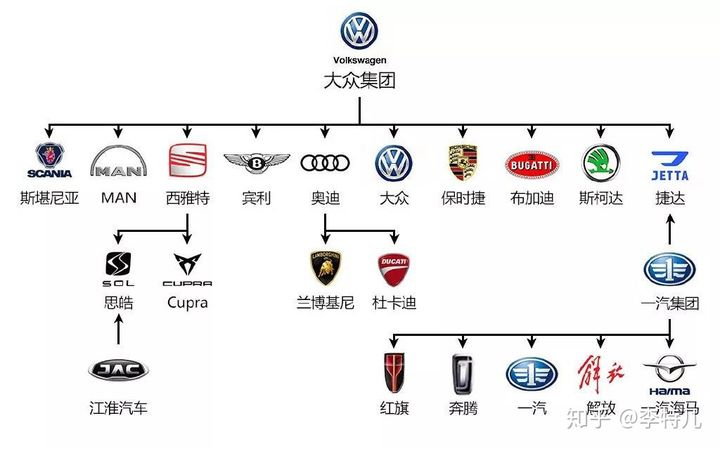
- 通用汽车公司(General Motors)，是一家美国的汽车制造公司，总部位于密歇根州的底特律市，制造厂房遍布美国30州和世界32个国家。旗下拥有雪佛兰、别克、GMC、凯迪拉克、霍顿、及吉优等品牌。
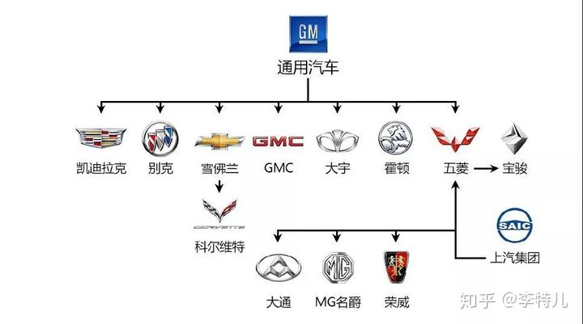
- 宝马汽车(Bavarian Motor Works)，是指宝马汽车公司(Bayerische Motoren Werke AG，简称BMW)生产的汽车，主要的系列车型有1、2、3、4、5、6、7、8等系列。以生产豪华轿车、摩托车和高性能发动机而闻名于世。
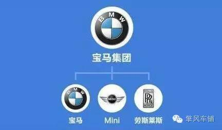
- 标致雪铁龙集团，也称PSA集团，是法国的一家公司，属于私营性质。旗下主流的车型有标志、雪铁龙，并且那个不太知名的DS是雪铁龙的一个子品牌。
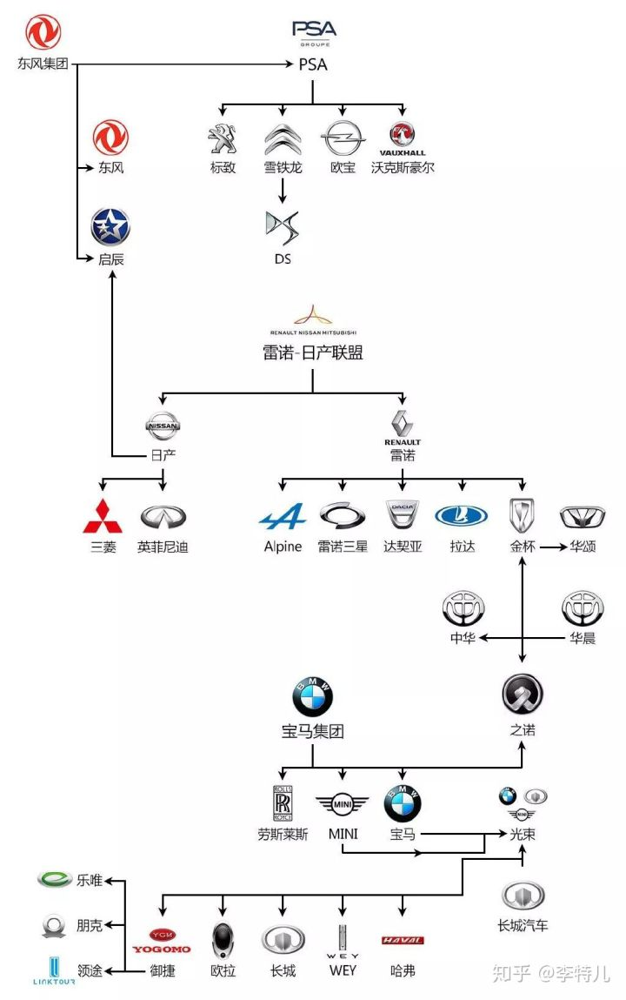
- 菲亚特集团，意大利的公司，目前已经有上百年的历史了，旗下有法拉利、玛莎拉蒂、蓝旗亚等高端品牌。
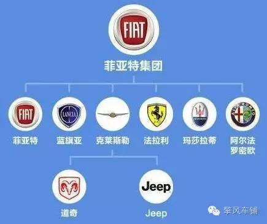
- 福特集团，美国公司，成立于1903年，创始人是大名鼎鼎的亨利·福特，也是目前世界最大的汽车制造商之一。旗下拥有福特和林肯两大品牌，同时野马也是福特旗下。
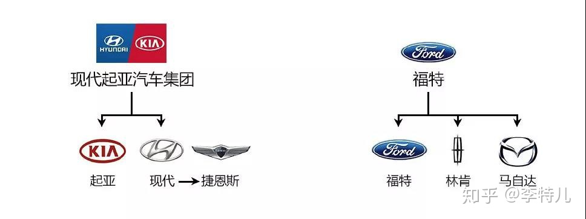
现代汽车集团(Hyundai)，韩国一家跨国经营的汽车厂商，财富世界500强企业，也是2009年韩国最大及世界排名第四的汽车制造商。
重庆长安汽车股份有限公司，简称长安汽车。在重庆、北京、河北、合肥、意大利都灵、日本横滨、英国伯明翰、美国底特律和德国慕尼黑建立“六国九地”各有侧重的全球协同研发格局。
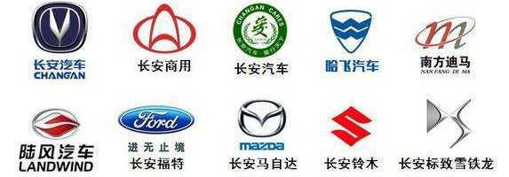
广州汽车集团股份有限公司(Guangzhou Automobile Group Co., Ltd.，简称广汽集团)的前身是成立于1997年6月的广州汽车集团有限公司，2005年6月28日，由广州汽车工业集团有限公司、万向集团公司、中国机械工业集团有限公司、广州钢铁企业集团有限公司、广州市长隆酒店集团有限公司作为共同发起人，对原广州汽车集团有限公司进行股份制改造，以发起方式设立的大型国有控股股份制企业集团，是中国汽车行业首家在集团层面引入多家合资伙伴，进行改制设立股份公司的企业。
长城汽车，成立于1984年的中国汽车品牌，总部位于河北省保定市，主要生产皮卡、SUV、轿车及新能源汽车 等车型。长城汽车是中国首家在香港H股上市的民营整车汽车企业、国内规模最大的皮卡SUV专业厂、跨国公司。
比亚迪股份有限公司(股票代码：1211.HK)，创立于1995年，2002年7月31日在香港主板发行上市，公司总部位于中国广东深圳，是一家拥有IT，汽车及新能源三大产业群的高新技术民营企业。
东风汽车集团有限公司(英文名为Dongfeng Motor Corporation)是由国家单独出资、依法设立的有限责任公司，由中华人民共和国国务院国有资产监督管理委员会作为履行出资人义务的机构，根据法律、行政法规以及国务院的授权，代表国务院对公司依法履行出资人职责。
上海汽车集团股份有限公司(简称“上汽集团”，股票代码为600104)是国内A股市场最大的汽车上市公司，截至2013年底，上汽集团总股本已达到110亿股。上汽集团所属主要整车企业包括乘用车公司、商用车公司、上海大众、上海通用、上汽通用五菱、南京依维柯、上汽依维柯红岩、上海申沃等。
北京汽车集团有限公司(简称“北汽集团”)是中国汽车行业的骨干企业，成立于1958年，总部位于北京。发展成为涵盖整车及零部件研发与制造、汽车服务贸易、综合出行服务、金融与投资等业务的国有大型汽车企业集团，位列2020年《财富》世界500强第134位。
中国第一汽车集团有限公司(简称一汽集团，中国一汽或一汽,英文名称为FAW)，位于中国吉林省长春市绿园区，前身为第一汽车制造厂，由毛泽东主席亲笔题写厂名，饶斌创建，于1953年7月15日奠基。经过六十多年的发展，中国一汽已成为年产销300万辆级的国有大型汽车企业集团，产销总量始终位列行业第一阵营。
参考
二、大众高尔夫
概念：高尔夫(Volkswagen Golf)是由德国大众汽车生产的小型家庭轿车，自1974年推出并销往世界各地至今，已经经历八代车款。前轮驱动的高尔夫，是大众汽车成功取代甲壳虫的后继车种。截至2007年为止，已生产了超过2500万辆，史上全球销量累计第三。
产品
第一代：1974年——1983年
- 1973年第一代高尔夫在设计师guiguaro的笔下诞生了。当时整个欧洲被石油危机重创，汽车工业面临严峻考验。这种形势下，大众公司果断决定放弃传统的后置风冷发动机布局，把宝押在一款全新的设计之上：它将采用水冷四缸发动机，前轮驱动，紧凑的承载式车身，轻量化底盘，前悬架为支柱式，后悬架为交叉臂式，乔治亚罗设计的溜背式造型带楞带角，这就是高尔夫。1974年3月高尔夫正式投产，8月这款车上市了。1976年6月1600cc的第一代高尔夫GTI上市，高达110匹马力的动力输出，极速达到181Km/h的杰出表现。
第二代：1983年——1991年
- 第二代高尔夫于1983年8月正式上市，特色是较长的轴距以及加大的行李箱设计；新增加的扭力梁强化抓地操控性；高尔夫GTI顶级引擎设计采用1.8升112匹最大马力输出，在1983至1989年10年之间销售总量高达630万台，平均每年销售63万台。
第三代：1983年——1991年
- 1991年8月第三代高尔夫正式上市，椭圆形的前车灯设计加上流线型的外观很快就成为市场的焦点，1992年8月所有第三代高尔夫车款均将前座双气囊列为选用配备，并创下全球480万台的销售记录。
第四代：1997年——2003年
1997年8月第四代高尔夫荣耀登场，全新震撼造型，全车身镀锌，车体采用大众汽车12年全车镀锌防腐蚀技术，严格把关的二阶段内外车身镀锌处理再配合大众汽车完美的6层漆面涂装作业，建立超越全球汽车最高标准，能有效防止腐蚀，保固12年。代表了超高品质标准的高尔夫新系列，在七年间创下全球430万台的销售量。与第三代高尔夫相比，第四代产品车身加长80mm，加宽50mm，加高10mm，这样轴距也随着加长了40 mm，可想而知，车内空间也随之更加宽敞。12年防止生锈的全镀锌车身和流线型车身结构具有很高的抗扭刚性，面板缝隙极其小，这一切都标志着新高尔夫在品质上的提升。1998年初，第四代高尔夫敞蓬车上市。 1999年5月，最新款高尔夫旅行轿车面世，从质量和驾驶安全方面来看，第四代高尔夫达到了最高的标准，坚实的车身为旅途的舒适创造了条件。前气囊和侧气囊确保防撞安全。此外，第四代高尔夫还有大量可选装置，例如驾驶员座位电子调节记忆装置和带有彩色屏幕的电子导航系统等。
2000年9月，高尔夫全车系一起庆祝全球销售突破2000万辆，同时高尔夫GTI也于2001年欢庆25岁生日，并且大众汽车也推出特别纪念车款来回馈车迷！
2002年，史上最强高尔夫R32正式发表。R代表Racing，这部史上最强的高尔夫R32搭载着与大众汽车全新顶级豪华旗舰辉腾同样的3.2升V6引擎，最高极速为247公里/小时，拥有着高尔夫史上前所未有的惊人动力。
2002年6月25日，第21，517，415辆高尔夫下线，超过了大众甲壳虫的生产量，甲壳虫用了56年取得的辉煌，高尔夫仅用了29年的时间便超越了。
2003年7月，大众集团将第四代高尔夫引入其在中国的合资公司一汽-大众生产，采用的是生产宝来的pq34平台。
第五代：2003年——2009年
- 2003年9月大众汽车特别选在法兰克福车展正式发布史上最成功的德国畅销车第五代高尔夫。它具备了更优越的性能、更强悍的动力表现、集创新高科技于一体的多样优势。第五代高尔夫继承一贯的高尔夫血统，但无论在造型视觉上、科技进化上，都较前几代车款有着更进一步的革命性开创，是高尔夫有史以来最大幅度的改款。golf5它采用pq35平台生产，上海大众己经引进了该生产线，用以生产途安mpv车。与第四代高尔夫相比，第五代外观上最显眼的变化当数前大灯——采用了流行的犀利的锐角设计，其时尚与动感跃然纸上。底盘的最大变化在后悬架上，由第四代的半独立扭力梁式改为完全独立的4连杆式。
第六代：2008年——2012年
- 大众第六代高尔夫是基于现有的源于第五代高尔夫的PQ35平台设计的。该车是在2008年巴黎车展上首次亮相的。第六代高尔夫清晰简洁而又强有力的设计风格标志着大众汽车未来的发展方向，其鲜明的外观特征和全面的舒适性，突破了车型级别的界限。
第六代高尔夫再次由一汽-大众引进国产，于2009年10月19日在长春上市。
第七代：2012年——2017年
- 在德国当地时间9月4日晚上，大众在柏林正式发布了第七代高尔夫，它将替代2008年问世的第六代高尔夫，新车不仅更大、更漂亮，而且在技术上也全面超越了它的前辈，拥有更多的看点。新七代高尔夫拥有更加吸引人的外型，全新研发的轻质底盘，燃油经济性极佳的涡轮增压引擎等，可以说第七代高尔夫将是紧凑型家用车市场上让人无法抗拒的一款产品。
新高尔夫：新高尔夫于2017年11月4日正式上市，新高尔夫首次将“卡库金（Kurkuma）”引入国内，全新的车身颜色凸显出新高尔夫的时尚与活力。
第八代：2019年-至今
参考
三、现代ix35
介绍
- 现代ix35是一款SUV车型。现代ix35将作为途胜Tucson的换代车型，2010年正式引入国产。北京现代方面表示，国产版的ix35将不再沿用“途胜”作为车型名称。北京现代ix35已于2010年4月8日成都车展上市，首批将推出2.0L和2.4L两种排量，并有两驱和四驱可以选择。
- 在2013成都车展的现场，北京现代改款ix35正式上市，售价区间为16.98万-24.28万元，新车采用了北京现代新的家族设计元素，整个前脸发生了改变，看起来像是缩小版的全新胜达。
重大事件
- 刘先生于2010年11月在北京燕盛隆汽车销售服务有限公司购买的ix35 2.4L车型，仅行驶了5000公里就发现仪表台异响。刘先生多次往返汽车4S店进行检查，被4S店员工告知为设计问题属于通病至今无法解决。
- 北京现代汽车有限公司决定召回2010年4月9日至2011年10月6日生产的部分IX35汽车，共计121835辆。此次召回车辆的制动踏板开关触点接触不良，电信号延迟，可能增加发生事故的概率，存在安全隐患。两公司将为召回范围内的车辆免费更换合格的制动踏板开关，以消除安全隐患。
参考
四、92-95-98汽油
基础
平时开车经常加汽油，每次去都能看到类似这样的一些数字，92、95、98号等等，其实他们就是汽油的标号，是根据汽油内所含的辛烷值而加以区别
汽油标号越高辛烷值越高，表示汽油的抗爆性也就越好。当油气混合物注入汽缸后，活塞向上运动压缩油气混合物，当压力升高时温度上升，如果此时汽油的抗爆性过低，在火花塞点火前就开始燃烧，从而形成爆燃，也就是俗称的爆震。爆震不仅影响发动机的输出，还会对发动机造成损伤。
- 汽油标号越高抗爆性越好，并非汽油标号越高越好。其实每辆车的说明书上都有一个名词叫做“压缩比”，可以通过车辆使用说明手册、生产产家、4S店或网站查询等拿到此值。
- 一般来说，高压缩比的发动机如果选用低标号汽油会使得汽油燃烧不完全，机器强烈震动，从而使输出功率下降，机件受损，耗油及行驶无力。
- 但如果低压缩比的发动机用高标号油就会出现“滞燃”现象，即压缩比最高时还不到自燃点，一样会出现燃烧不完全现象，因此需要再多喷油来保证动力的输出，不但对发动机没好处，而且油耗也会同样增大。
从而可以得出一个结论：汽油标号与燃油是否洁净没有关系。
分类
- 92号汽油指与含92%的异辛烷、8%的正庚烷抗爆性能相当的汽油燃料。
- 92号汽油适合技术含量不高的普通车。
- 95号汽油指与含95%的异辛烷、5%的正庚烷抗爆性能相当的汽油燃料。
- 95号汽油适合绝大多数汽车。
- 98号汽油指与含98%的异辛烷、2%的正庚烷抗爆性能相当的汽油燃料。
- 98号汽油适合高档豪华车和大马力跑车。
- 92号汽油指与含92%的异辛烷、8%的正庚烷抗爆性能相当的汽油燃料。
五、国五国六
- 国五和国六两个车最大差别在于国六车使用了性能更好的三元催化器，让发动机尾气排放可以达到国六标准，发动机和车辆本身没有什么区别。
六、汽车排量
- 基础
- 活塞从上止点移动到下止点所通过的空间容积称为气缸排量。
- 如果发动机有若干个气缸，所有气缸工作容积之和称为发动机排量，一般用升(L)来表示。
- 1.5表示1.5升排量，T表示安装涡轮增压装置，L表示自然吸气
- 涡轮增压(Turbocharger)=是一种利用内燃机(Internal Combustion Engine)运作转产生的废气驱动空气压缩机(Air-compressor)的技术。
七、通告
- 2021通告
关于对外省区市机动车采取交通管理措施的通告
为贯彻落实北京城市总体规划要求，进一步缓解本市交通运行压力，减少机动车污染物排放，根据《中华人民共和国道路交通安全法》《北京市大气污染防治条例》《北京市机动车和非道路移动机械排放污染防治条例》有关规定，经市政府同意，决定自2021年11月1日起，在本市行政区域内道路，对外省、区、市号牌机动车采取以下交通管理措施：
一、外省、区、市号牌机动车进入本市行政区内道路行驶的，应当办理进京通行证。
进入六环路（不含）以内道路和通州区全域范围道路（不含高速公路主路）的，办理“进京通行证（六环内）”，每次有效期最长7天，载客汽车每年每车最多办理12次，其它车辆不限制办理次数。不进入上述区域的，办理“进京通行证（六环外）”，每次有效期7天，不限制办理次数。
二、进京通行证通过互联网或现场渠道办理，办理时需提交驾驶人身份证件、机动车驾驶证和机动车行驶证。
运输危险化学品的车辆必须现场办理，并提交登记地道路运输管理机构核发的危险品运输资质凭证。
三、公安交管和生态环境部门将对申请办理进京通行证的机动车车辆状态和尾气排放标准进行核验，有下列情形之一的，不予办理进京通行证：
（一）黄标车（未达国Ⅰ标准的汽油车、未达国Ⅲ标准的柴油车）。
（二）未达国Ⅳ标准的柴油载货汽车。
（三）在本市有不符合相关排放标准记录且未复检合格的车辆。
（四）在本市有交通违法未处理的车辆。
四、外省、区、市机动车在京期间，应遵守以下管理规定：
（一）全天禁止进入二环路（含）以内道路、建国门外大街、复兴门外大街、复兴路（木樨地桥至新兴桥段）。
（二）未办理进京通行证的，全天禁止进入本市行政区域道路。
（三）未办理“进京通行证（六环内）”的，全天禁止进入六环路（不含）以内道路和通州区全域道路（不含高速公路主路）；持“进京通行证（六环内）”的，在有效期满前应驶出上述范围。
（四）未办理“进京通行证（六环内）”或持“进京通行证（六环内）”超过有效期的载客汽车，在六环路（不含）以内和通州区全域（不含高速公路主路）支路等级以上城市道路停放的，根据停放天数相应扣减当年可办理“进京通行证（六环内）”的天数。
（五）载客汽车、载货汽车、专项作业车、摩托车以及国Ⅰ国Ⅱ排放标准轻型汽油车还应遵守相应的区域限行规定。
五、军队、武警车辆，执行任务的警车、救护车、消防车、工程救险车不受上述措施限制。已经领取“外埠客运进京证”的客运汽车，无需办理进京通行证，但须按照指定路线行驶。整车运送鲜活农产品的载货汽车，无需办理进京通行证，但应遵守载货汽车的通行规定。
六、公安机关交通管理部门按照本通告的规定，在禁限行区域周边设置交通标志，对于违反规定进入禁行区域道路行驶的，认定为“违反禁令标志指示行驶”的违法行为。
七、此前发布的关于外省、区、市机动车进京通行证办理和使用规定与本通告不一致的，以本通告为准。各区发布的进京通行证使用规定，从其规定执行。
特此通告。
北京市交通委员会 北京市生态环境局
北京市公安局公安交通管理局
2021年7月27日
梳理
总结
- 由原来的进入六环需要办理进京证扩展到全市，即进入北京行政区就要办理进京证
- 在第一条的基础上，进京证分两种：六环外办理不限次数，六环内每年12次每次7天
- 由原来的二环主干路扩展到整个二环，即外地车(一般车辆)不能进入二环区域
如何获取京牌
- 参加摇号
- 车辆过户
- 结婚过户
- 遗产继承
- 法拍(首先得有摇号资格)
- 公司指标过户
- 2018通告
北京市交通委员会 北京市环境保护局 北京市公安局公安交通管理局
关于对部分载客汽车采取交通管理措施的通告
京交发〔2018〕102号
为精准管控以异地上牌长期在京使用方式规避本市小客车数量调控政策的车辆，确保机动车总量调控政策的公平性和有效性，缓解城市道路交通运行压力和停车资源供需矛盾，降低机动车污染物排放，根据《中华人民共和国道路交通安全法》《北京市大气污染防治条例》有关规定，按照《北京城市总体规划(2016年-2035年)》要求，经市政府同意，自2019年11月1日起，对在本市部分行政区域内道路上行驶的外省、区、市核发号牌(含临时号牌)的载客汽车采取如下交通管理措施：
一、进入六环路(不含)以内道路和通州区全域范围道路(不含高速公路主路)行驶的，须办理进京通行证。进京通行证应放置在车辆前风挡玻璃内侧左下部(通过“北京交警APP”办证的，需自行下载打印)。
二、每辆车每年最多办理进京通行证12次，每次办理的进京通行证有效期最长为7天。有效期届满前，应驶出上述范围。未办理进京通行证或进京通行证超过有效期，在上述范围内支路等级以上城市道路停放的，根据停放天数相应扣减当年可办理进京通行证的天数。未办理进京通行证或进京通行证超过有效期，进入上述范围道路行驶的，认定为“违反禁令标志指示行驶”的违法行为，由公安机关交通管理部门依法处罚。
三、下列外省、区、市核发号牌(含临时号牌)的载客汽车进入上述范围内行驶，无需办理进京通行证：
(一)已经领取外埠客运通行证的省际长途客运汽车和省际旅游客运汽车；
(二)军队、武警车辆及执行任务的警车、救护车等特种车辆。
四、公安机关交通管理部门应当按照本通告的规定，在上述范围周边道路设置禁令标志，并通过增设、整合道路及城市公共空间视频监控资源，加大执法、处罚力度。
五、上述范围以外区域(不含高速公路主路)，由各远郊区人民政府根据实际需要，划定外省、区、市核发号牌(含临时号牌)的载客汽车凭进京通行证通行的区域。
六、《北京市交通委员会、北京市环境保护局、北京市公安局公安交通管理局关于对部分机动车采取交通管理措施降低污染物排放的通告》(京交发〔2014〕29号)中关于载客汽车的交通管理措施与本通告不一致的内容，以本通告为准。
特此通告。
北京市交通委员会
北京市环境保护局
北京市公安局公安交通管理局
2018年6月15日